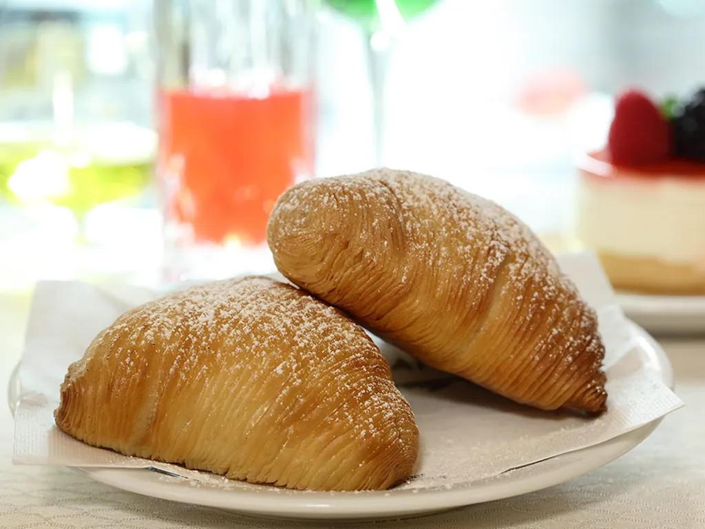
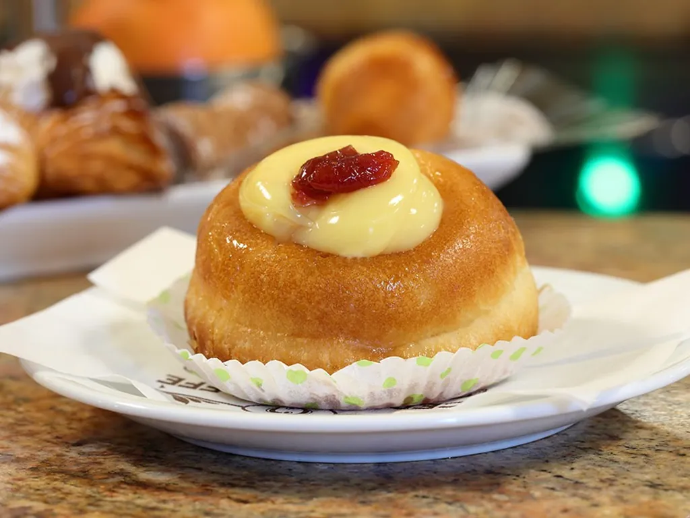
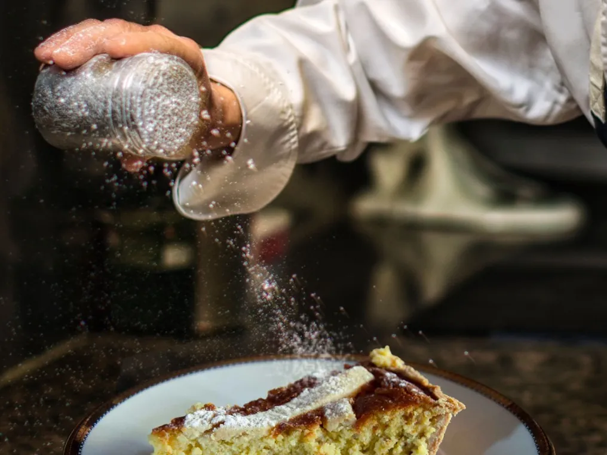
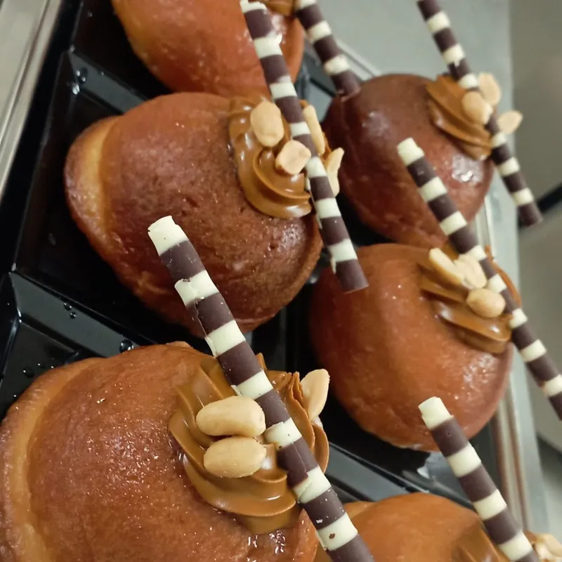
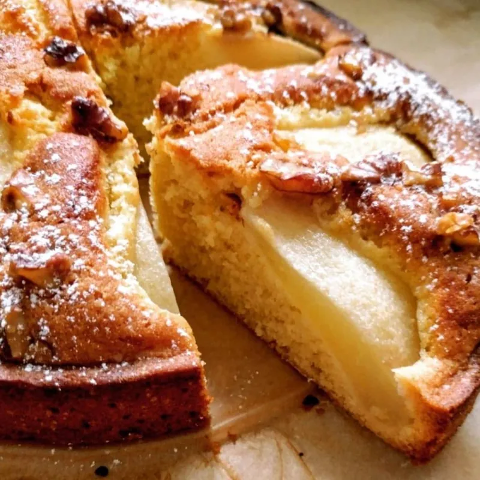
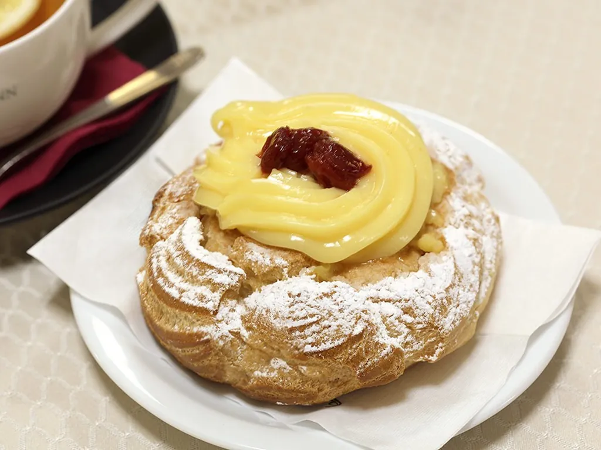

"Napoli tre cose tene belle: 'o sole, 'o mare e 'a sfugliatella." Il detto è vecchio, ma da noi vale ancora. La pasticceria di Ceraldi Caffè è di produzione propria: i dolci nascono nei nostri laboratori, ogni giorno, con ricette di famiglia custodite da oltre cento anni.
I classici napoletani
- Sfogliatella riccia e frolla, con ricotta, semola, canditi e cannella. E la Santa Rosa, con crema e amarene. La storia della sfogliatella.
- Babà al rum, classico o con crema e amarena, panna e fragole, cioccolato. La storia del babà.
- Pastiera napoletana, con grano, ricotta e fiori d'arancio. La storia della pastiera.
- Zeppola di San Giuseppe, con crema pasticcera e amarena. La storia delle zeppole.
- Codina di aragosta, con chantilly, cioccolato o pistacchio.
- Caprese al cioccolato o al limone, delizia al limone, biscotto all'amarena, prussiane, francesine e pasticcini mignon.
Le creazioni della casa
- Cestino: il riccio della sfogliatella diventa un cesto croccante, con chantilly e frutti di bosco.
- Segreto amalfitano: babà al limoncello con un cuore di chantilly ai limoni di Amalfi.
- Babàmisù: una cupola di babà con crema al mascarpone e caffè.
- Pellecchiella: torta con le albicocche Pellecchielle del Vesuvio, presidio Slow Food.
- Torta di mele con mela Annurca IGP, ricotta e pera, crostata di fragoline, millefoglie crema e amarena.
Le feste
Il calendario si legge anche in vetrina: le zeppole il 19 marzo, la pastiera a Pasqua, e a Natale i dolci natalizi napoletani.





